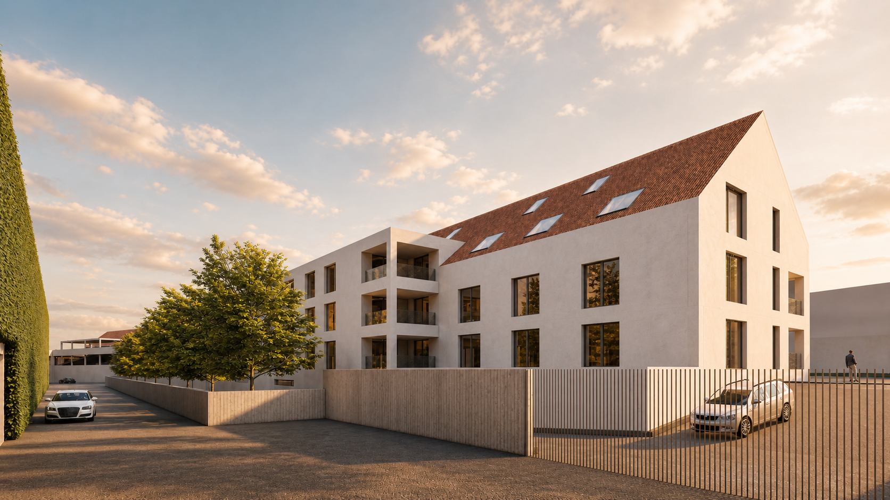

Popis areálu · 01
Bytový dům
Plánovaný bytový dům představuje novou tvář přestavby celého areálu. Navržen je s důrazem na kvalitní a klidné bydlení a počítá se samostatně řešeným parkováním v podzemí i na vlastním pozemku.
Dům bude mít dvě nadzemní podlaží a obytné podkroví, díky čemuž citlivě naváže na charakter okolní zástavby. Současně přirozeně oddělí veřejný prostor návsi od výrobní části areálu.